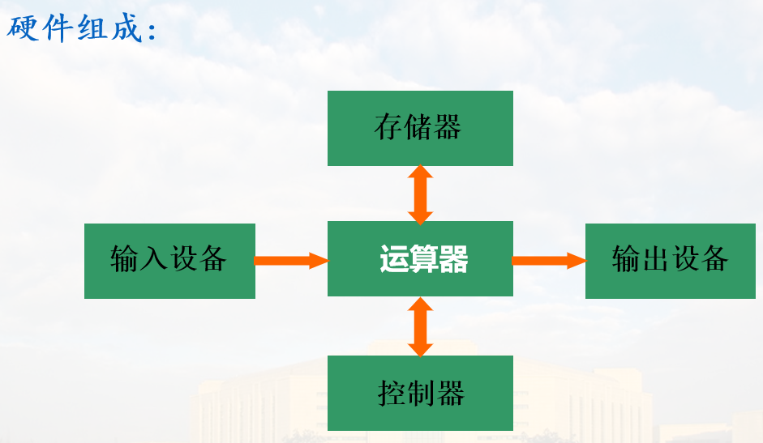
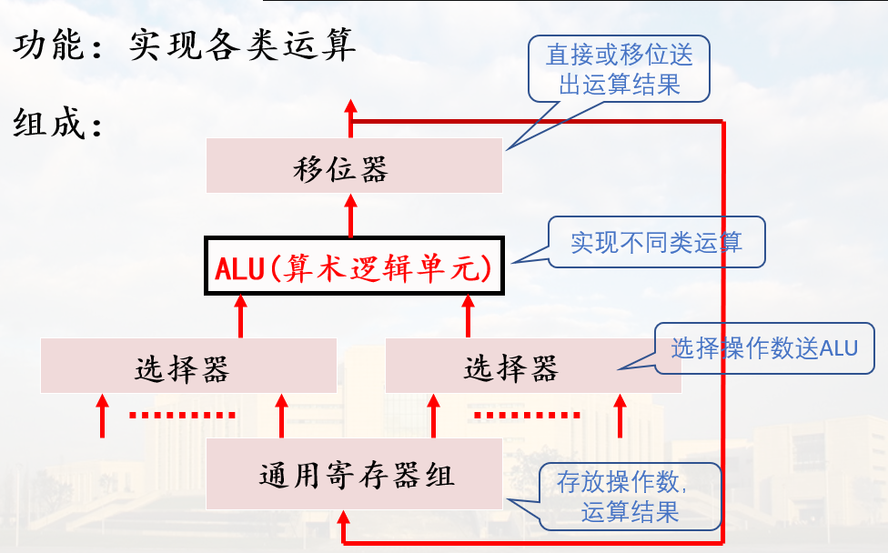
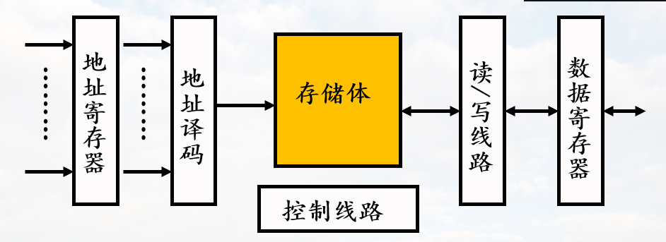
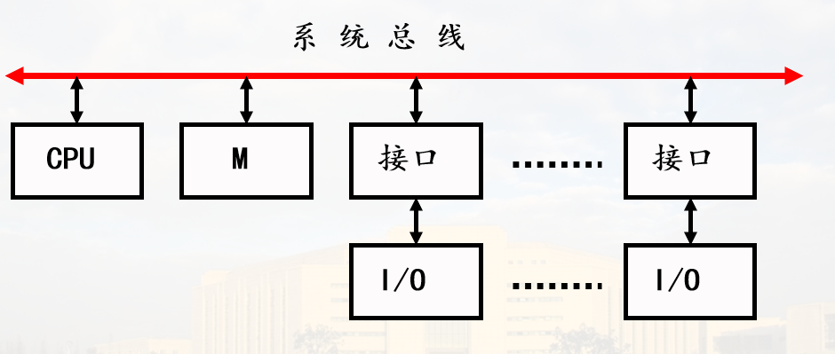
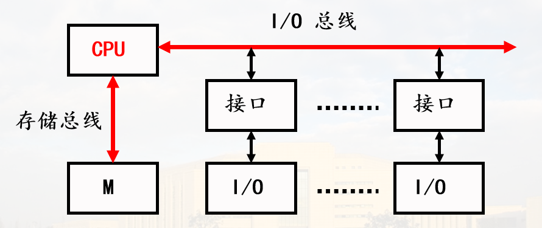
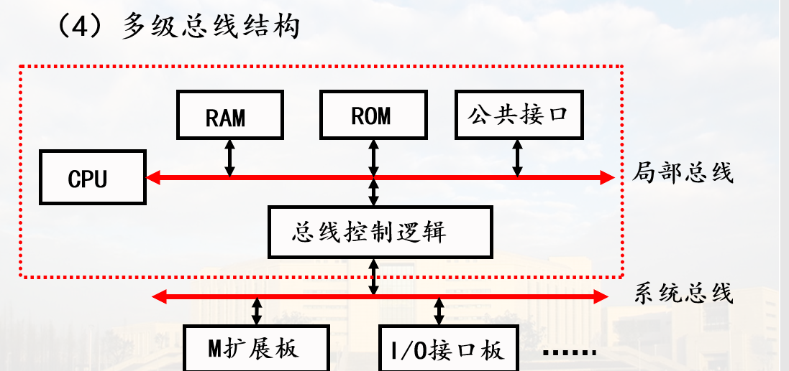
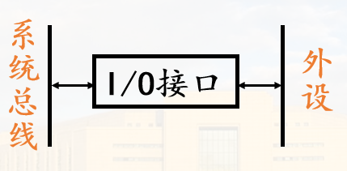

概论
冯·诺依曼计算机
核心思想
- 采用二进制形式表示数据和指令
- 采用存储程序方式工作（核心）
- 硬件组成：运算器、控制器、存储器、输入设备、输出设备；并规定了这五大部件的基本功能
硬件组成

主要特点
以运算器为核心；指令串行执行
改进
- 并行处理技术
- 输入/输出控制方式
- 存储器组织方式
- 指令系统设计(精简、复杂)
计算机系统的硬件组成
主要功能部件
1. CPU
执行指令: 产生控制信息, 控制各个部件工作
由运算器、控制器组成
(1) 运算器
1). 功能: 实现各类运算
2). 组成: 
(2) 控制器
-
功能: 产生控制命令(微命令), 控制全机操作
-
组成:

-
微命令产生方式(指令执行控制方式):
a). 组合逻辑控制: 由组合逻辑电路产生微命令
b). 微程序控制: 由微指令产生微命令
(3)本课程讨论
- 运算器组织与工作原理
- 两种控制器组成原理与控制机制
- 模型机的数据通路结构和指令执行过程
2. 存储器
(1)功能
存储程序与数据

(2)组成(主存储器为例)

存储体: 存放信息的实体 寻址系统: 对地址码译码,选择存储单元 控制线路: 产生读/写时序, 控制读/写操作 读/写线路: 完成读/写操作
(3)本课程讨论
- 半导体存储单元读/写原理
- 主存储器逻辑设计方法
3. 输入输出设备
功能: 信息转换
硬件系统结构(考虑部件间的信息传输方式)
1. 以总线为基础的系统结构
总线: 能为多个部件分时共享(同一时刻只有一个部件能发送信息)的一组信息传送线路及相应的控制逻辑

是效率和成本之间的折衷(相对比两两之间的线路)
(1)单总线结构

注意I/O与系统总线之间通过接口连接
缺陷:所有的部件都通过总线通信, 效率低
(2)以CPU为中心的双总线结构

CPU与存储器之间有单独的一条总线
缺陷:降低CPU的利用率(外部与存储器通信占用CPU)
(3)以存储器为中心的双总线结构

(4)多级总线结构

2. 采用通道或IOP的大型系统结构
(1)带通道的系统

通道用于在主机与外设进行信息交换时节约CPU时间; CPU与通道并行工作
(2)带IOP(IO处理机)的系统

3. 模型机系统结构
采用单总线系统结构
4. I/O接口
系统总线与IO设备之间的交接部分称为IO接口
外部设备通过IO接口连接系统总线, 与主机通信

5. 本课程讨论
- IO控制方式
- 总线与接口的概念、功能、分类
- 中断方式及接口
- DMA方式及接口
计算机系统的性能指标
1. 基本字长
基本字长指参加一次运算的操作数的位数, 如8、16、32、64
字长影响计算精度、指令功能(操作码数量、类型)
2. 运算速度
CPU主频和时钟频率: 决定CPU内核工作速度的重要因素
MIPS: 每秒百万条指令数; M 百万
FLOPS: 每秒浮点运算次数
CPI: 执行每条指令所需的时钟周期数
3. 数据通路宽度与数据传输率
(1). 数据通路宽度
指数据总线一次能并行传送的数据位数
(2). 数据传输率
指数据总线每秒传送的数据量(字节), 也称为带宽
计算公式:
4. 存储容量
(1). 主存容量
容量:

(2). 外存容量
常表示为字节数
与地址码位数无关
5. 基准程序测试
(1). 基准测试程序(Benchmark)
- 实际应用程序
- 核心测试程序
- 小测试程序
- 合成测试程序
- ......
(2) 基准测试程序套装(Benchmark Suite)
SPEC2006, 2017, ......
计算机发展
略啦, 看PPT啦 (～￣▽￣)～